Cygwin Setup Example
1/25/2006
- Create user user accounts that DO
NOT HAVE SPACES IN THEIR NAMES (e.g., jcstaff)
- Login to the Windows machine with an account that has
Administrator privileges. The Cygwin users will also need to have
Administrator privileges to be consistent with this example.
- Check the availability of disk space. For this case, the machine
has a 40GB hard drive (39.9GB capacity) and 28.6GB available when
starting the installation.
- Get Cygwin installer from cygwin.com
- Save the Cygwin installer to disk
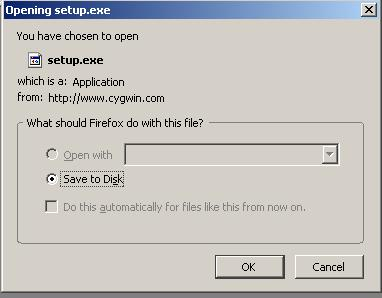
- Open Cygwin installer
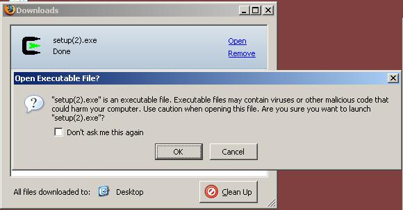
- Start the installed and select "Install from Internet". Note that
this option will download and go through the installation steps in one
pass. One can also download and install in separate steps using the
other options. This is useful when you want to setup more than one
machine and save download time on the subsequent machines.
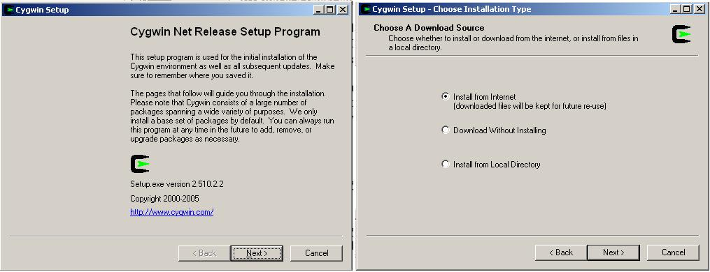
- Select the directory you want to install the software after the
download. I generally place it on the system drive and make sure I have
at least 1GB of free space if I am doing a full download.
- Select "All Users" so that all logins have access to the
software.
- If you select Unix/binary text file type, all text file end of
lines will terminate with \lf (this is what I always use). If you
select DOS/text, they will end with \cr\lf.
i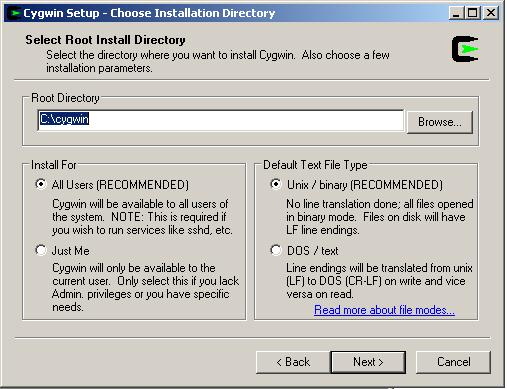
- Select a directory for the downloaded internet files.
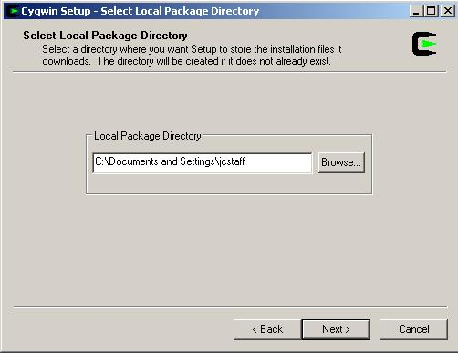
- You will commonly select a Direct Connection for a normal
internet configuration.
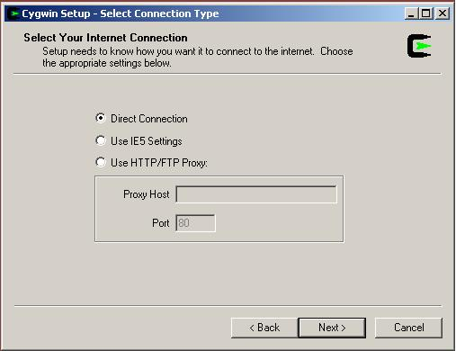
- Choose one of the download sites to obtain the files.
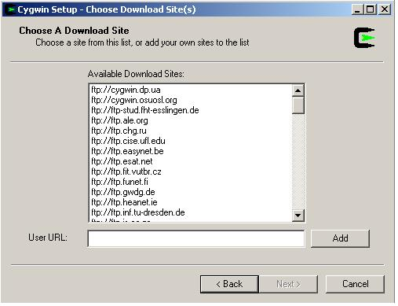
- Select the packages you want to install. The installer comes up
ready to install only the default set of packages. This is probably
good enough to to the minimum commands, but lacks various shell
utilities like "find", "less", "more", "vi", etc. If you have enough
disk space and a few hours for the download process, you can change to
a full installation by clicking on the "All-Default" and changing it to
"All-Install". The snapshots below goes after only a few packages.
o Shells - bash completion; adds a few bash utility commands
o System - ping; useful when debugging firewall issues
o Editors - vim; my favorite editor
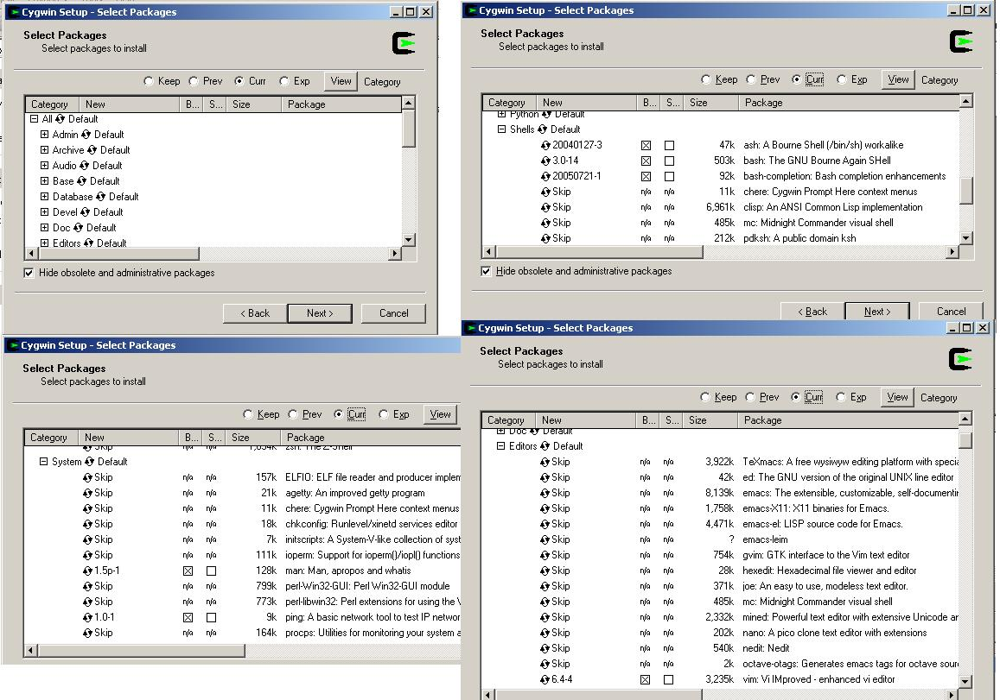
- The installation will then run, unattended for a lengthy period
of time. If you chose the full installation, this is a great time to
either leave it overnight to churn or go onto follow-on steps than do
not involve Cygwin. If you only installed the basic set of packages,
this could take as little as 15-30min. If the download fails, it
remembers your selections and can be easily restarted.
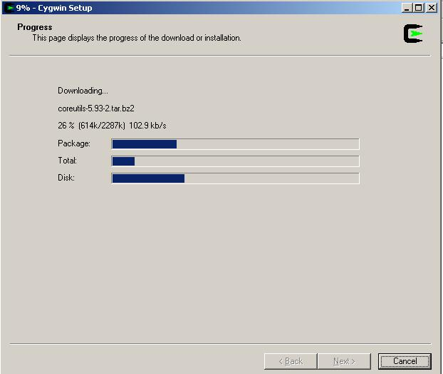
- Optionally create a start icon on the desktop and/or start menu.
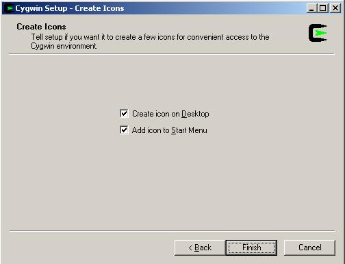
- Selecting only a few of the packages above resulted in only 100MB
being taken for Cygwin (and its cached download files that can be
deleted).
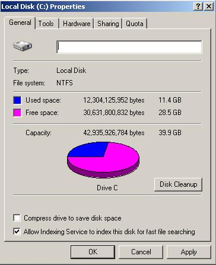
- Start Cygwin's bash shell by clicking on the icon. You can adjust
the size of the window and various properties by going through the
window options on the upper left icon (this is the same for all
terminal windows under MS Windows). The first time you execute this, it
gathers login information from the system and adds it to its
/etc/passwd and /etc/groups file. It also builds the user a set of
.bash, .bash_profile, and .inputrc files.
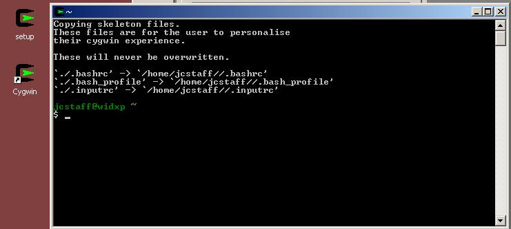